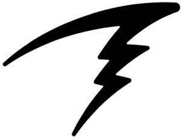

Trade Mark Journal No.2025/022 30 May 2025
WO0000001842731 (9,10,11,14)
Office of origin: Canada
Date of International Registration:4 December 2024
Date of designation in the UK:
4 December 2024

International priority date claimed: 13 August 2024
(Canada)
(2343678)
- Class 9
- Dive computers; rebreather oxygen controllers; rebreather oxygen sensor monitors; computer buses for use in underwater breathing apparatus; pressure transmitters; mounting brackets adapted for dive computers; carrying cases for dive computers; dive computer screen protectors; wireless chargers for dive computers and diving watches; USB cables for dive computers and diving watches; battery caps for diving computers; diving heel straps; diving wrist straps; breathing apparatus for underwater swimming; weight belts for divers; downloadable computer software for diving; global positioning system (GPS) receivers; global positioning system (GPS) transmitters; portable global positioning system (GPS) device consisting of position sensors; portable global positioning system (GPS) device consisting of speed meters; head mounted displays; interfaces for computers in the field of diving; pressure gauges; diving suits; diving masks; dive skins; dry suits; gloves for divers; life buoys; life jackets; safety and life-saving apparatus and equipment in the field of diving; marking buoys; safety signals, luminous or mechanical; signalling apparatus and instruments in the field of diving; nautical apparatus and instruments in the field of diving; navigational apparatus for diver propulsion vehicles (DPV); navigation apparatus for vehicles in the form of on-board computers; navigation instruments and apparatus in the field of diving; oxygen transvasing apparatus in the field of diving; oxygen regulators; pedometers; pressure indicators in the field of diving; pressure measuring apparatus in the field of diving; rescue laser signalling flares; signaling lights for diving; LED underwater lights for use as a safety beacon for scuba divers; luminous safety signs; smartwatches; snorkels; temperature indicators; time clocks; wearable activity trackers; wearable activity trackers with heart rate monitoring function; wearable computers in the field of diving; wearable displays in the field of diving; diving weights; wetsuits; diving boots; air tanks for scuba diving; buoyancy bladders for diving; compressed air bailout units for diving; diving goggles; diving helmets; diving regulators; rebreathers for diving.
- Class 10
- Pulse meters; heart rate monitors.
- Class 11
- Diving lights; head torches; portable headlamps; regulating and safety accessories for water apparatus in the field of diving; safety lamps; searchlights; electrically heated clothing, namely, gloves, mittens, socks, pants, shorts, jackets, and vests.
- Class 14
- Diving watches; watch straps; cases for diving watches; screen protectors for diving watches.
Shearwater Research Inc.
Representative: OYEN WIGGS GREEN & MUTALA LLP, 480 - The Station, 601 West Cordova Street, VANCOUVER BC V6B 1G1, CANADA